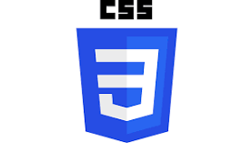

HTML

Es un lenguaje de marcado donde marcamos que elementos existen dentro de una p+agina utilizando etiquetas
CSS
Es un lenguaje de estilos que nos permite elegir como se ven y donde se se ubican los elementos de nuestra pagina web
Javascript
Es el lenguaje de programacion en el cual escribimos la intereactividad de nuestro sitio web